Function
功能描述¶
-
启动阶段一直持续到模式管理设施运行为止。基本上，启动阶段包括启动模式管理所需的最少活动：
初始化低级驱动程序，启动操作系统以及初始化BSW调度程序和BSW模式管理器模块。类似地，关断阶段与启动阶段相反，启动阶段是模式管理被取消初始化的。 -
UP阶段包含默认模式，以防使用ECU模式处理。这些模式之间的转换是通过
ECU状态管理器模块和BSW模式管理器模块之间的合作完成的。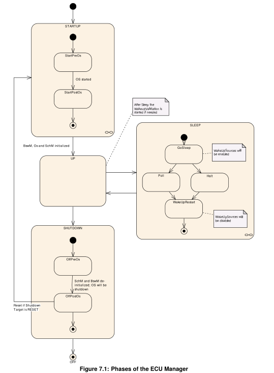
不同阶段的功能：
- 启动阶段: 目的是将基本软件模块初始化到通用模式管理设施正常运行的程度。:smile:
- UP阶段： 当 BSW 调度程序启动并调用BswM_Init时，UP 阶段开始。BSW和SWC运行直到它们准备好关闭或者休眠ECU.
- SHUTDOWN阶段： The SHUTDOWN phase handles the controlled shutdown of basic software modules and finally results in the selected shutdown target OFF or RESET .
- SLEEP阶段： 在该阶段节能，一般，不执行代码，但仍提供电源。（EcuM根据预期或意外的唤醒事件唤醒ECU，但是应该忽略意外的唤醒事件，所以EcuM提供了一个协议（指定了处理唤醒源的驱动程序和ECUM之间的协助过程）来验证唤醒事件）
- OFF阶段：ECU在断电时进入关闭状态。ECU在这种状态下可以唤醒，但仅适用于具有集成电源控制的唤醒源。
STARTUP 阶段¶
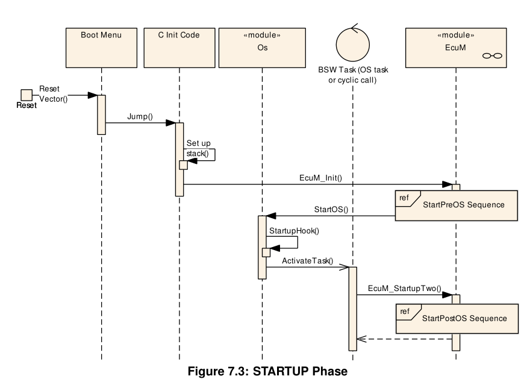
StartPreOS序列中的活动¶
表StartPreOS Sequence显示StartPreOS序列中的活动及其在EcuM_Init中执行的顺序:
| StartPreOS Sequence | ||
|---|---|---|
| Initialization Activity | Comment | Opt. |
| Callout EcuM_AL_SetProgrammableInterrupts | 在具有可编程中断优先级的ECU上，必须在启动操作系统之前设置这些优先级。 | yes |
| Callout EcuM_AL_DriverInitZero | 初始化块0此调用只能初始化不使用生成后配置参数的BSW模块。调用不仅可以包含驱动程序初始化，还可以包含任何类型的preOS、低级初始化代码 | yes |
| Callout EcuM_DetermnePbConfiquration | 此调用预期将返回一个指向完全初始化的EcuM_ConfigType结构的指针，该结构包含ECU管理器模块和所有其他BSW模块的构建后配置数据。 | no |
| Check consistency of configuration data | 如果检查失败，则调用EcuM_ErrorHook。 | no |
| Caou EcuMA DriverInitOne | 调用不仅可以包含驱动程序初始化，还可以包含任何类型的预操作系统、低级初始化代码 | yes |
| Get reset reason | 重置原因源自对Mcu_GetResetRreason的调用以及通过EcuMWakeupSource配置容器定义的映射 | no |
| Select default shutdown target | ECU Manager 模块应使用配置的默认关机目标（EcuMDefaultShutdownTarget）调用EcuM_GetValidatedWakeupEvents。 | no |
| Caot EcuM LoopDetection | 如果启用了循环检测，则每次启动时都会调用此调用 | yes |
| Start OS | 启动AUTOSAR OS | no |
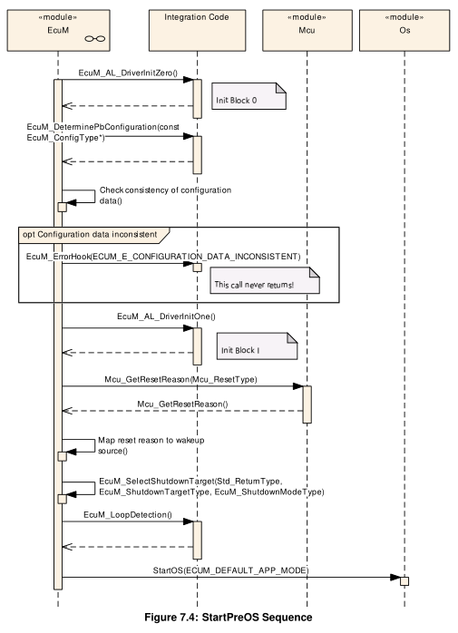
StartPostOS序列中的活动¶
| StartPostOS Sequence | ||
|---|---|---|
| Initialization Activity | Comment | Opt. |
| Start BSW Scheduler | no | |
| Init BSW Mode Manager | no | |
| Init BSW Scheduler | Initialize the semaphores for critical sections used by BSW modules | no |
| Start Scheduler Timing | Start periodical events for BSW/SWCs | no |
当通过EcuM_StartupTwo 功能激活时，ECU管理器模块应执行StartPostOS序列中的操作:
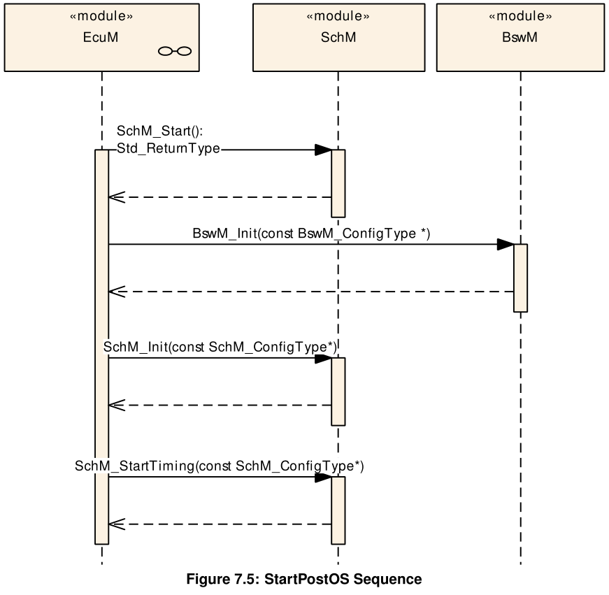
SHUTDOWN 阶段¶
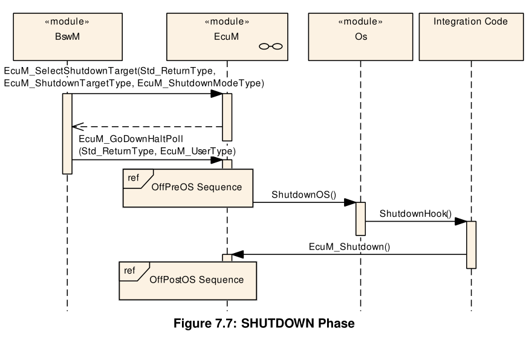
OffPreOS序列中的活动¶
| OffPreOS Sequence | ||
|---|---|---|
| Shutdown Activity | Comment | Opt. |
| De-init BSW Mode Manager | no | |
| De-init BSW Scheduler | no | |
| 检查唤醒事件。所有挂起的唤醒事件或仅在关机期间验证的唤醒事件都将被考虑在关机期间，具体取决于 EcuMIgnoreWakeupEvValOffPreOS 的配置。 | Purpose is to detect wakeup events that occurred during shutdown | no |
| 如果唤醒事件处于挂起状态，请将 RESET 设置为关机目标（将使用 EcuMDefaultResetModeRef 的默认复位模式） | 仅当检测到挂起的唤醒事件以允许立即启动时，才应执行此操作 | no |
| ShutdownOS | Last operation in this OS task | no |
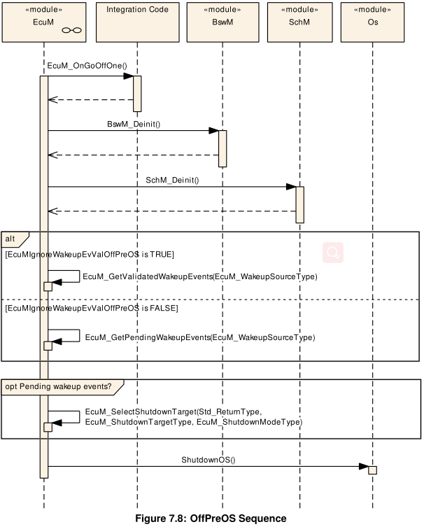
OffPostOS序列中的活动¶
| OffPostOS Sequence | ||
|---|---|---|
| Shutdown Activity | Comment | Opt. |
| Callout EcuM_OnGoOffTwo | ||
| Callout EcuM_AL_Reset or Callout EcuM_AL_SwitchOff | Depends on the selected shutdown target (RESET or OFF) | no |
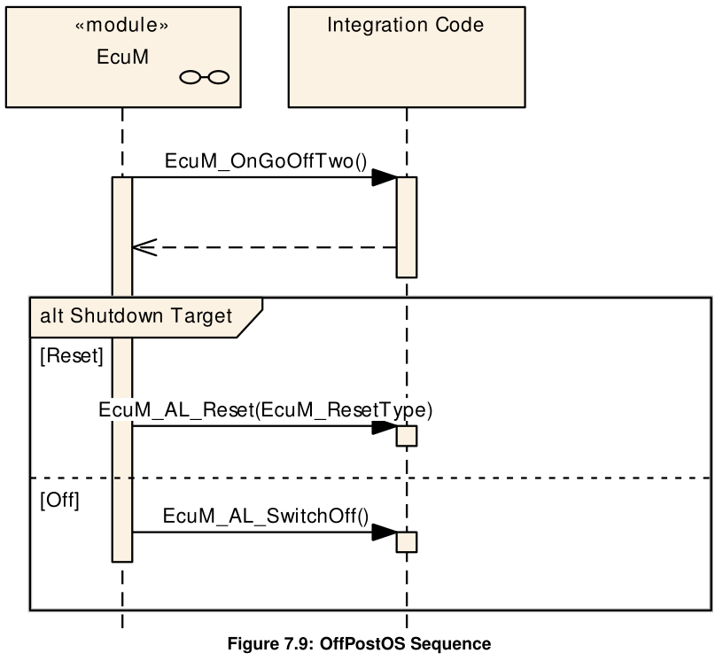
SLEEP 阶段¶
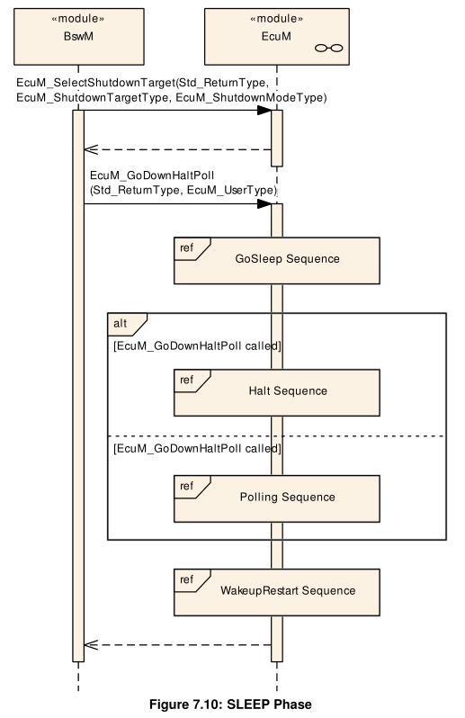
GoSleep序列中的活动¶
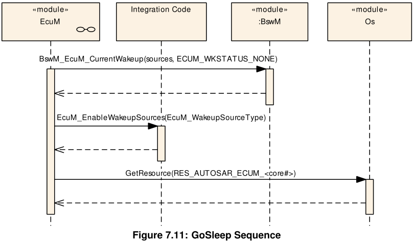
暂停序列中的活动¶
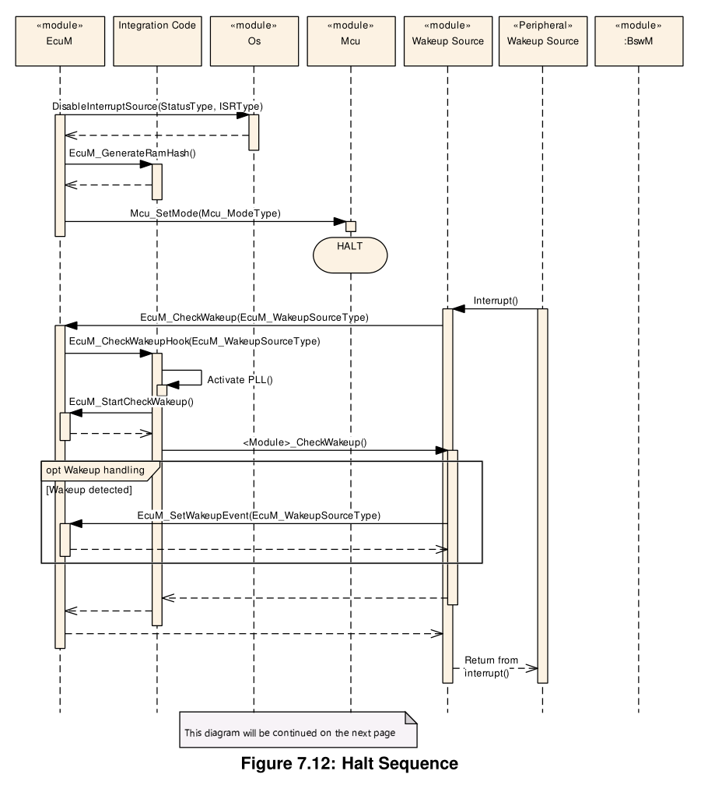
轮询序列中的活动¶
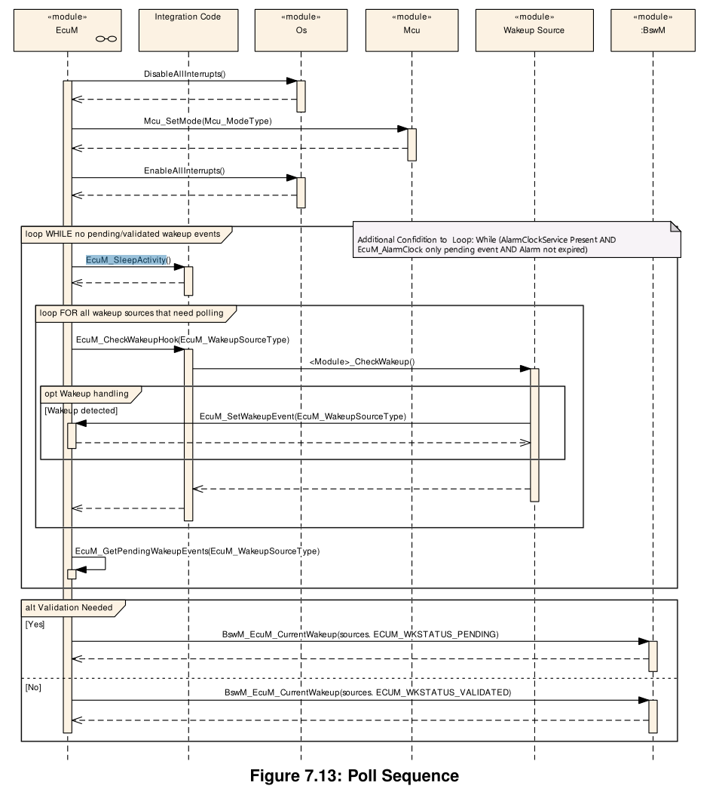
Leaving Halt or Poll¶
- 如果在ECU处于停止或轮询状态时发生唤醒事件（例如切换唤醒线路，CAN总线上的通信等），则ECU管理器模块应通过执行唤醒重启序列重新获得控制权并退出睡眠阶段。
- 可以调用 ISR 来处理唤醒事件，但这取决于硬件和驱动程序实现。
如果在ECU处于停止或轮询状态时发生异常事件（硬件复位或电源循环），ECU管理器模块应在STARTUP阶段重新启动ECU。
唤醒重启序列中的活动¶
| WakeupRestart⁶ | ||
|---|---|---|
| Wakeup Activity | Comment | Opt. |
| Restore MCU normal mode | 选定的MCU模式在配置参数EcuMNormalMcuModeRef中配置 | |
| Get the pending wakeup sources | ||
| Callout EcuM_DisableWakeupSources | 禁用当前挂起的唤醒源，但保留其他唤醒源，以便以后可以唤醒。 | |
| Callout EcuM_AL_DriverRestart | 初始化需要重新启动的驱动程序 | |
| Unlock Scheduler | 从此时开始，所有其他任务可能会再次运行。 |
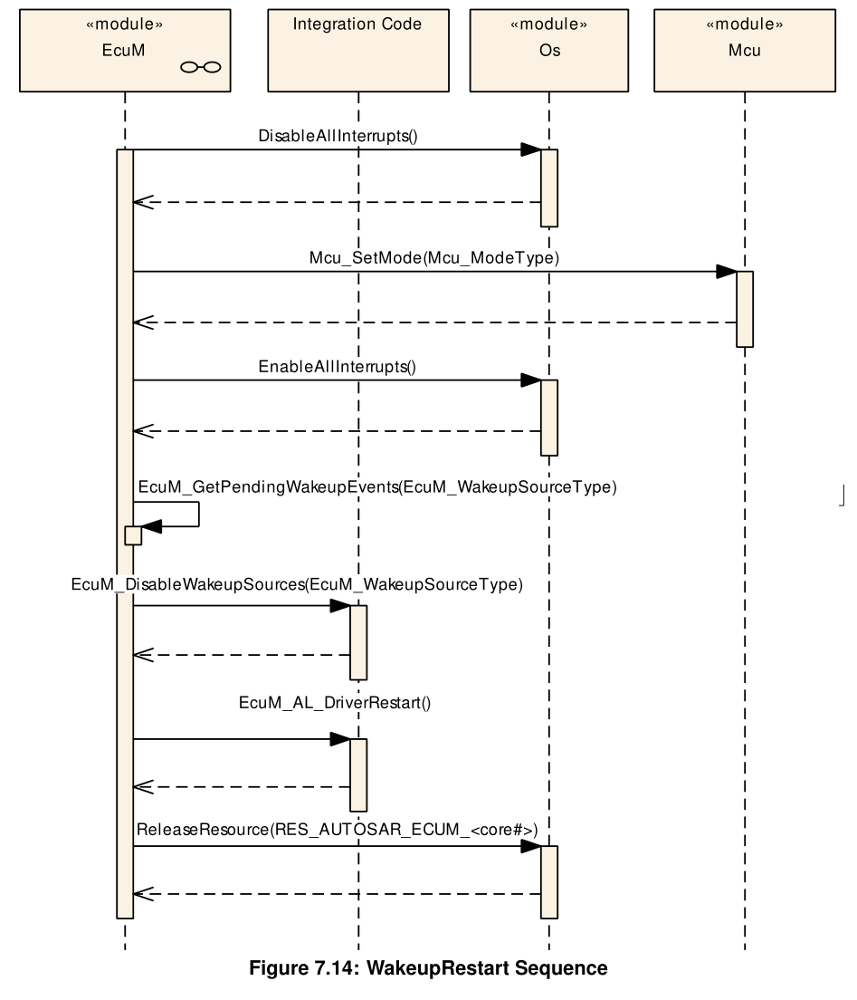
UP 阶段¶
在UP阶段，EcuM_MainFunction定期执行，它有三个主要功能：
- 检查唤醒源是否已唤醒，并在必要时启动唤醒验证
- 更新闹钟计时器
- 仲裁RUN和POST_RUN请求和释放。
唤醒源状态处理¶
唤醒源不仅在唤醒期间处理，而且与所有其他 EcuM 活动并行连续处理。此功能在EcuM_MainFunction中运行，通过模式请求与ECU管理的其余部分完全分离。
| State | Description |
|---|---|
| NONE | No wakeup event was detected or has been cleared. |
| PENDING | A wakeup event was detected but not yet validated. |
| VALIDATED | A wakeup event was detected and succesfully validated. |
| EXPIRED | A wakeup event was detected but validation failed. |
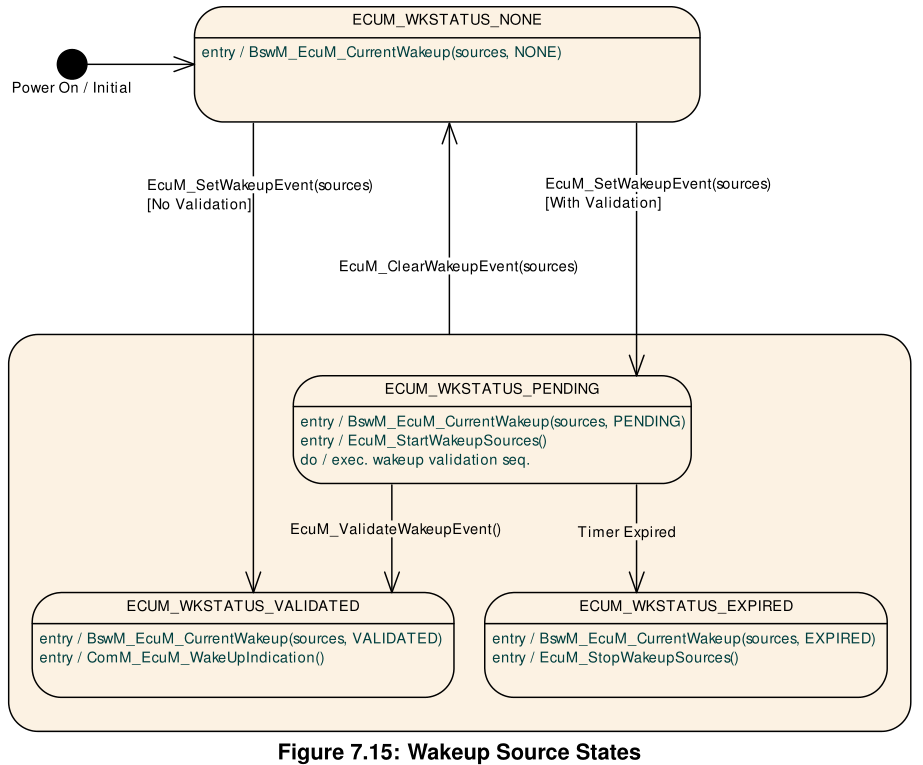
当ECU管理器操作导致唤醒源的状态发生变化时，ECU管理器模块应向BswM发出模式请求，将唤醒源的模式更改为新的唤醒源状态。
当ECU管理器模块处于UP阶段时，唤醒事件通常不会触发状态更改。但是，它们会触发停止和轮询子阶段的结束。然后，ECU 管理器模块自动执行唤醒重启序列，然后返回到 UP 阶段。
总结：每个挂起的事件都是独立验证的（如果已配置），EcuM 将结果作为模式请求发布到 BswM，这反过来可以触发 EcuM 中的状态更改。
唤醒验证序列中的活动¶
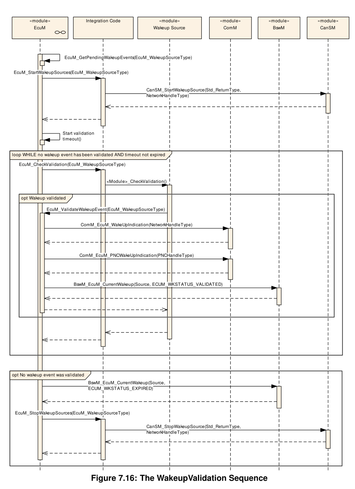
通信信道唤醒¶
如果通信信道上发生唤醒，则相应的总线收发器驱动程序必须通过调用EcuM_SetWakeupEvent功能来通知ECU管理器模块。
唤醒源与ECU管理器的交互¶
当发生唤醒事件时，相应的驱动程序应通知ECU管理器模块唤醒。此通知最可能的方式是:
- 退出“停止”或“轮询”序列后。在这种情况下，ECU Manager 模块调用EcuM_AL_DriverRestart来重新初始化相关驱动程序，从而有机会扫描其硬件，例如挂起的唤醒中断。
- 如果唤醒源实际上处于睡眠模式，则驱动程序必须自主扫描唤醒事件;通过轮询或等待中断。
唤醒验证超时¶
ECU 管理器模块应提供单个唤醒验证超时计时器或每个唤醒源一个计时器。
具有唤醒源的驱动程序的要求¶
检测到唤醒事件时，驱动程序必须调用EcuM_SetWakeupEvent一次，并提供一个EcuM_WakeupSourceType参数，用于标识配置中指定的唤醒源。
ECU 管理器模块应检测在驱动程序初始化之前发生的唤醒，无论是从停止/轮询还是从关闭。
ShutDown Targets¶
“关闭标志”是一个描述性术语，用于描述未执行代码的所有状态 ECU。它们被称为关闭标志，因为它们是状态机在离开 UP 阶段时将驱动到的目标状态。以下状态是关闭标志：
- Off
- Sleep
- Reset
Sleep¶
- 在睡眠阶段不会错过任何唤醒事件。如果在进入睡眠序列中发生了唤醒事件，则不应输入停止或轮询序列。
- ECU管理器模块可以定义一组可配置的睡眠模式（参见EcuMSleepMode），其中每个模式本身都是一个关断目标。
- ECU 管理器模块应允许将 MCU 休眠模式映射到 ECU 休眠模式，从而允许将它们作为关断目标寻址。
- 关机目标睡眠应将所有内核置于睡眠状态。
Reset¶
- ECU 管理器模块应定义一组可配置的复位模式（参见 EcuMResetMode 和 EcuM_ResetType ），其中每种模式本身都是一个关断目标。该集将最低限度地包含以下目标：
- Mcu_PerformReset
- WdgM_PerformReset
- T oggle I/O Pin via DIO / SPI
- ECU管理器模块应允许为复位目标定义别名
- ECU 管理器模块应定义一组可配置的复位原因（请参阅 EcuMSshutdownCause 和 EcuM_ShutdownCauseType ）。该集应至少包含以下目标：
- ECU状态机进入停机状态
- WdgM检测到故障
- DCM请求关闭I
- 重置时间。
- ECU管理器模块应为BSW模块和SW-C提供设施
- 记录停机原因
- 获取一组最近的关机原因
Alarm Clock¶
ECU 管理器模块维护一个主闹钟，其值决定了 ECU 被唤醒的时间。此外，ECU管理器管理一个内部时钟，即EcuM时钟，用于与主报警进行比较。
请注意，警报唤醒机制仅与 SLEEP 阶段相关。SWC 和 BSW 模块可以在 UP 阶段（并且仅在 UP 阶段）设置和检索报警值，但是，这将在 SLEEP 阶段得到遵守。
与可以使用通用ECU管理器模块工具实现的其他定时/唤醒机制相比，闹钟服务在计时器到期之前不会启动唤醒重启序列。当ECU模块检测到其定时器引起唤醒事件时，它会增加其定时器并立即返回睡眠状态，除非时钟时间超过闹钟时间。
- 当闹钟服务存在时（参见 EcuMAlarmClockPresent），EcuM 管理器模块应维护一个 EcuM 时钟，其时间应为自电池连接以来的时间（以秒为单位）。
- EcuM时钟应跟踪UP和SLEEP阶段的时间。
- 硬件允许时，ECU重置不应重置EcuM时钟时间。
- 应有一个且仅一个唤醒源分配给 EcuM 时钟（请参阅 EcuMAlarmWakeupSource）。
Alarm Clocks and Users¶
SW-C和BSW模块可以各自维护一个闹钟（用户闹钟）。每个用户闹钟（参见EcuMAlarmClock）都与一个EcuMAlarmClockUser相关联，该用户标识相应的SW-C或BSW模块。
- 每个EcuM用户最多应有一个用户闹钟。
- EcuM用户不得设置其他用户闹钟的值。
- ECU 管理器模块应始终将主闹钟值设置为最早的用户闹钟值的值。
- 只有授权的 EcuM 用户才能设置 EcuM 时钟时间（请参阅 EcuMSetClockAllowedUsers ）。
EcuM Clock Time¶
如果底层硬件机制是基于滴答的，ECUM应相应地“纠正”时间。
EcuM Clock Time in the UP Phase¶
EcuM_MainFunction在UP阶段递增EcuM时钟。它使用标准操作系统机制（警报/计数器）来推导其时间。请注意计数器与 EcuM 时间之间的粒度差异，以秒为单位
EcuM Clock Time in the Sleep Phase¶
有两种替代方法可以在睡眠期间增加 EcuM 时钟，具体取决于所选的睡眠模式（EcuMSleepModeSuspend 参数） 在停止序列中（请参阅 7.5.2 停止序列中的活动），必须将 GPT 驱动程序放入GPT_MODE_SLEEP，以仅配置时基所需的计时器通道。它还要求 GPT 使用 Gpt_EnableWakeup API 启用基于计时器的唤醒通道。最好将Gpt_StartTimer API 设置为 1 秒，但如果无法达到此值，则需要更频繁地唤醒 EcuM 以累积多个计时器唤醒，直到累积 1 秒以增加时钟值。
- 当离开睡眠状态时，ECU管理器模块将中止任何活动用户闹钟和主闹钟。这意味着时钟感应和其他事件引起的唤醒都将导致清除所有警报。
- 用户警报和主警报应在启动前操作系统序列、唤醒重启序列和关闭前操作系统序列中取消
MultiCore¶
BSW 模块可以分布在不同的分区上，因此可以分布在不同的内核上。一些BSW模块作为BswM必须包含在每个分区中。操作系统或 EcuM 等其他模块已包含在每个内核的一个分区中。
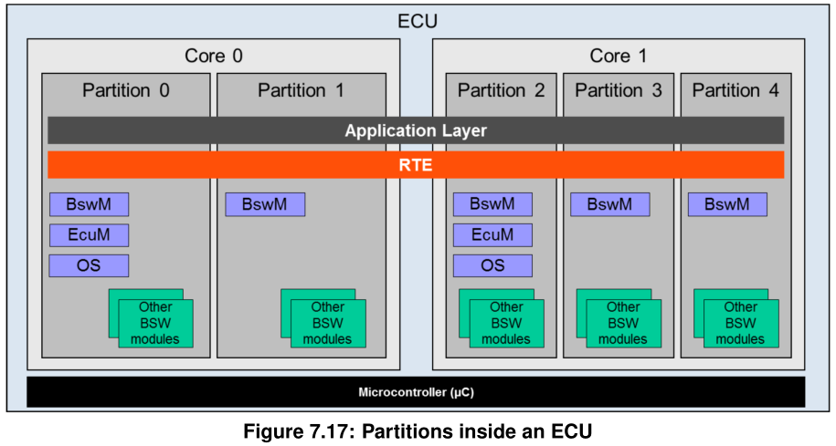
在多核架构中，EcuM必须以每核一个实例的方式分布。
有一个指定的主核心，引导加载程序通过EcuM_Init启动主 Ecu M。主 EcuM 启动一些驱动程序，确定构建后配置，并使用所有附属 EcuM 启动所有剩余内核。
现在，每个 EcuM 启动核心本地操作系统和所有核心本地 BswM（每个分区中正好驻留一个 BswM）。
Master Core¶
有一个明确的主核心。主内核是哪个内核，由引导加载器确定。主核心的EcuM作为第一个BSW模块启动并执行初始化操作。
然后是使用所有其他 EcuM 启动所有其他内核。
当这些启动时，它与每个卫星EcuM一起初始化核心本地操作系统和BswM。
Slave Core¶
在每个从属核心上，必须运行一颗卫星EcuM。如果一个核心包含多个分区，则每个核心只能存在于 EcuM 上。